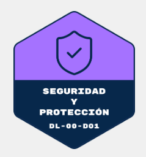

CONCIENCIA SOBRE SEGURIDAD Y PROTECCIÓN DIGITAL
Desarrollo de competencias de ciberdefensa ciudadana, reconocimiento proactivo de actores malintencionados, prevención de fraudes y blindaje de la identidad en línea para estudiantes de todas las áreas de la UMSA.

No nos limitaremos a teoría abstracta. Analizaremos casos concretos que le suceden a diario a estudiantes universitarios: mensajes bancarios falsos, suplantaciones de voz en WhatsApp y secuestro de tesis.
A lo largo de la clase activaremos 4 simuladores en vivo (Clasificador de amenazas, Auditor de huella, Lupa forense de deepfakes y Simulador EmailPal) y 3 checkpoints oficiales.
Ocurre por malware, secuestro con ransomware, hackeo de servidores o corrupción accidental de archivos. Para una empresa representa la pérdida de bases de datos de clientes; para un estudiante universitario, la destrucción de su tesis, proyectos o fotografías familiares irreemplazables.
Los delincuentes obtienen números de carnet/cédula, nombres completos, credenciales bancarias o firmas digitales para solicitar préstamos a tu nombre, cometer fraudes fiscales o suplantarte en plataformas académicas.
Cifra los archivos del disco duro (.docx, .pdf, fotos) con claves complejas y exige un rescate monetario (en Bitcoin o criptomonedas) para liberarlos. Casos notorios han paralizado hospitales y ministerios.
Código malicioso que se adhiere a un archivo ejecutable legítimo (.exe o scripts). Requiere que el usuario lo abra o ejecute para propagarse y dañar el sistema operativo o borrar datos.
A diferencia del virus, no necesita un programa huésped ni intervención humana para propagarse: salta de una computadora a otra a través de vulnerabilidades en la red de internet o Wi-Fi.
Se disfraza de software útil o inofensivo (un conversor a PDF gratuito, un juego crackeado o un reproductor multimedia). Al instalarlo, abre una puerta trasera secreta (backdoor) para que el atacante controle la PC.
Se ejecuta silenciosamente en segundo plano recopilando contraseñas mediante keyloggers (registro de pulsaciones del teclado), historial web y credenciales bancarias.
Bombardea la pantalla con ventanas emergentes constantes y redirige tu navegador a sitios dudosos, ralentizando tu equipo y consumiendo memoria RAM y batería.
Táctica de ingeniería social donde el atacante finge ser una entidad confiable (un banco, Netflix, MercadoLibre o la universidad) mediante correos o enlaces falsos para manipular a la víctima y robarle claves o números de tarjeta.
Ataques altamente personalizados dirigidos a una persona en específico (ej. directores, contadores o docentes), redactados con datos personales obtenidos previamente de sus redes sociales.
Bots automatizados que prueban millones de pares de usuario y contraseña filtrados en una brecha previa para intentar ingresar a otras cuentas donde el usuario reutilizó la misma clave.
Ataque que explota una vulnerabilidad en un software o sistema operativo que aún es desconocida para el fabricante o para la cual todavía no existe un parche de seguridad oficial disponible.
Miles de computadoras infectadas (botnets) saturan simultáneamente un servidor con millones de peticiones falsas por segundo, provocando la caída completa de portales web o sistemas bancarios.
El atacante intercepta la comunicación entre tu teléfono y un sitio web en redes Wi-Fi públicas abiertas sin contraseña, espiando todo el tráfico sin cifrar.
Caso 1: Bloqueo de Tesis y Nota de Rescate
Al encender la computadora, todos los documentos .docx y .pdf cambiaron a extensión .locked. En el escritorio aparece una nota con un temporizador que exige pagar 400 USD en Bitcoin para descifrar la información.
Protocolo Cisco: Aislar el equipo desconectándolo de Internet de inmediato para que el cifrado no alcance a carpetas de Google Drive ni discos de red. Restaurar desde una copia de seguridad externa previa.
¿Cuál de las siguientes es la consecuencia más inmediata y alarmante de una amenaza a la seguridad digital?
¿Qué tipo de malware bloquea o cifra los archivos de la víctima y le exige un pago monetario para recuperarlos?
Desde edades muy tempranas, niños y adolescentes utilizan tabletas, consolas y teléfonos para entretenimiento, tareas escolares y socialización digital. Si bien abre enormes oportunidades educativas, también expone a riesgos críticos.
Cisco subraya que plataformas como Discord, Roblox, Minecraft o foros de juegos multijugador permiten que los menores interactúen directamente con desconocidos que ocultan su identidad real tras avatares ficticios.
Al estar ocultos tras una pantalla, muchas personas se envalentonan para insultar, difamar o manipular, mostrando conductas violentas o abusivas que jamás se atreverían a cometer cara a cara.
Tanto Android (Google Family Link) como Apple iOS (Screen Time) y Windows (Family Safety) ofrecen funciones nativas para restringir descargas, filtrar búsquedas web y bloquear apps por edad.
Cisco destaca estas aplicaciones avanzadas para supervisar la actividad web en tiempo real, filtrar categorías peligrosas, bloquear pornografía y recibir alertas de lenguaje agresivo.
El uso nocturno prolongado altera los ciclos de sueño y genera fatiga visual. Establecer horarios de apagado automático nocturno protege la salud mental y física del menor.
Cisco subraya enfáticamente que ningún filtro de software es infalible. Los niños aprenden rápidamente a evadir bloqueos; la comunicación abierta y el clima de confianza son los factores determinantes para su seguridad.
Aunque borres una foto o comentario impulsivo a los 30 segundos, cualquier persona pudo haber tomado una captura de pantalla (screenshot) o un bot pudo guardarlo en archivos públicos (Wayback Machine).
Más del 70% de las empresas y comités de becas auditan las redes sociales públicas de los postulantes antes de contratarlos o premiarlos. Comentarios de odio o conductas inapropiadas destruyen carreras profesionales.
"Tu Nombre") cada 6 meses para monitorear qué datos tuyos son públicos.
Tu nivel de exposición actual es mínimo. Mantienes buenos filtros de privacidad y no regalas información a actores malintencionados.
- Pon tu cuenta de Instagram y TikTok en modo privado.
- Nunca publiques fotos con el uniforme escolar o logo de trabajo.
- Publica fotos de viajes después de haber regresado a casa.
¿Por qué las salas de chat y plataformas de juegos en línea son especialmente riesgosas para los niños y adolescentes?
¿Por qué es fundamental prestar especial atención a las fotos, comentarios y datos que publicas en Internet?
Son imágenes, grabaciones de video o audios completamente fabricados pero sumamente convincentes, creados mediante algoritmos avanzados de Inteligencia Artificial (aprendizaje profundo o Deep Learning).
Hacen parecer que una persona dijo o hizo algo que en realidad nunca dijo ni hizo, con una fidelidad visual y sonora que engaña tanto a ojos humanos como a filtros automáticos.
Cisco alerta que el mayor daño no es solo que la gente crea videos falsos, sino que empiece a dudar de grabaciones reales y evidencias genuinas alegando que son "deepfakes".
Llaman a una madre o abuelo con la voz exacta de su hijo o nieto pidiendo una transferencia bancaria urgente por un falso accidente o detención policial. El impacto emocional nubla el juicio crítico y la víctima transfiere sin verificar.
Bastan 3 a 5 segundos de audio limpio extraídos de un video público de TikTok, una historia de Instagram o un saludo de contestador telefónico para que la IA replique el timbre y tono exactos.
Acuerda hoy con tu familia una palabra secreta de seguridad que no esté en chats. Ante cualquier llamada desesperada pidiendo dinero, exige esa palabra antes de transferir un centavo.
Videos y audios falsos de candidatos anunciando retiros de candidatura, acuerdos secretos o actos de corrupción horas antes de una votación para alterar los resultados antes de que haya tiempo de desmentirlos.
Declaraciones falsas generadas con la imagen de CEOs de grandes corporaciones anunciando quiebras o explosiones en plantas energéticas han provocado desplomes millonarios en bolsas de valores en minutos.
Creación de montajes difamatorios o pornografía no consentida dirigida a hostigar a compañeros de clase, colegas o figuras públicas.
Lente 1: Tasa de Parpadeo y Movimiento Ocular
Los algoritmos de IA tradicionales entrenan con fotos estáticas donde los ojos casi siempre están abiertos. Por ello, los deepfakes parpadean con frecuencia anormalmente baja o con movimientos rígidos.
Plataformas como Instagram y TikTok están diseñadas para amplificar un atractivo visual hiper-estilizado: viajes idílicos, rostros perfectos y vidas que parecen libres de problemas.
Los filtros de retoque modifican facciones en tiempo real afinando la nariz, agrandando ojos y borrando poros. Cuando los jóvenes comparan su reflejo real en el espejo contra fotos editadas, surgen problemas de ansiedad, depresión y baja autoestima.
Nadie publica sus fracasos, deudas o días tristes. Comparar tu vida completa (con sus días buenos y malos) contra el 1% más brillante y seleccionado de otra persona es una fórmula segura de insatisfacción.
¿Qué hace que los deepfakes generados con Inteligencia Artificial sean especialmente peligrosos para la sociedad?
¿Cuál de las siguientes opciones describe un uso POSITIVO y legítimo de la tecnología de generación de deepfakes?
@ y la carpeta de spam para rescatar correos legítimos que cayeron por error.
Estimado ganador, tu cuenta fue seleccionada en nuestro sorteo. Para reclamar tus fondos, haz clic en el enlace adjunto y llena tus datos bancarios y número de seguridad social en las próximas 2 horas.
Sitios fraudulentos que ofrecen zapatillas o iPhones con 90% de descuento. Cisco recomienda revisar: dominio dudoso (.xyz, .top), ausencia de candado HTTPS y falta de datos fiscales o teléfono real.
Al instalar un programa gratuito, se colaron barras de búsqueda extrañas. Solución: Ir a "Panel de Control → Programas y Características" y desinstalar extensiones dudosas añadidas recientemente.
Si te llega un SMS con código OTP de Google o WhatsApp sin haberlo pedido, alguien está intentando acceder. Jamás compartas ese código con nadie.
Resumen de Habilidades Defensivas Dominadas Hoy:
Cifrado de datos y copias de seguridad 3-2-1, contraseñas blindadas de alta entropía, configuración y seguridad en routers Wi-Fi caseros y navegación web privada.